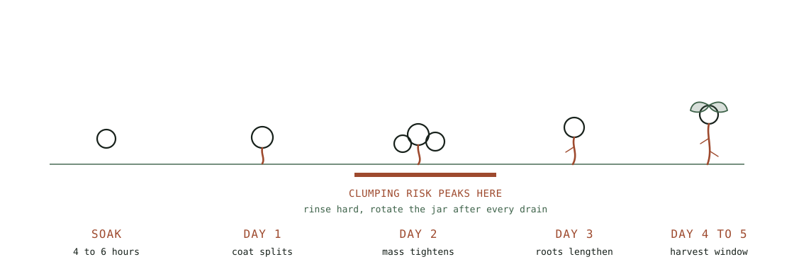

Guide
Broccoli Sprouts and What the Research Actually Says
How to grow broccoli sprouts reliably, and an honest account of the sulforaphane research that brought you here.
As an Amazon Associate this site earns from qualifying purchases. Links to products may be affiliate links. This costs you nothing extra and does not change what gets recommended. Nothing here is medical advice.
Broccoli Sprouts and What the Research Actually Says
Most people arrive at broccoli sprouts through a headline rather than through an interest in sprouting. That is worth naming, because it changes what a useful guide looks like. You need two things: an accurate account of what the research supports, and a growing method that works with a seed considerably less forgiving than the one you should have started on.
This page gives both, in that order.

The compound everyone is talking about
Broccoli and its relatives store a compound called glucoraphanin. On its own it does very little. The plant also produces an enzyme, myrosinase, kept physically separate from the glucoraphanin inside intact tissue.
When the tissue is damaged, by chewing, chopping, or blending, the two meet and the enzyme converts glucoraphanin into sulforaphane. Sulforaphane is the compound that has attracted sustained research attention over the past three decades, and the mechanism above is well established biochemistry rather than a marketing claim.
Young sprouts concentrate glucoraphanin at levels considerably higher than mature broccoli heads. This is the finding that launched the entire category, and the direction of it is not in dispute.
What the research supports, and what it does not
Here is where most articles stop being useful, so this section is deliberately careful.
What is well supported. Broccoli sprouts contain substantially more glucoraphanin per gram than mature broccoli. The conversion to sulforaphane depends on myrosinase activity. Sulforaphane has been studied extensively in laboratory and animal models, and there is a real and continuing body of human research examining it.
What is not settled. The size of the concentration advantage is not a single number. Published figures vary widely by cultivar, seed lot, growing conditions, sprout age, and the analytical method used. Any article giving you one confident multiplier is reporting a single study as though it were a constant. This site does not quote a figure until it can attach the specific source and conditions, and that source is not yet attached.
What is overstated constantly. Laboratory and animal findings are routinely reported as though they were established human clinical outcomes. They are a reason for continued research rather than a basis for a health claim. Nothing on this page is medical advice, and anyone considering broccoli sprouts for a specific health reason should raise it with a clinician rather than with a website.
The honest position is that broccoli sprouts are an interesting food with a genuinely active research literature behind them, and that the popular presentation of that literature runs well ahead of it.
Getting the enzyme to work
One practical point follows directly from the biochemistry and is worth more than most of the advice attached to this topic.
Myrosinase is heat sensitive. Cooking broccoli sprouts hard deactivates the enzyme, and without the enzyme the conversion to sulforaphane is greatly reduced. Chewing thoroughly, chopping, or blending raw sprouts does the opposite, since mechanical damage is exactly what brings the two components together.
This sits in direct tension with the food safety guidance covered on the hub page, which is that cooking is the only reliable pathogen kill step available in a home kitchen. Both things are true at once. Raw preserves the enzyme and carries the risk. Cooked removes the risk and reduces the conversion. That tradeoff is real, it is not resolvable by clever technique, and anyone in a higher risk group should resolve it in favour of cooking.
Sprouts and microgreens are not the same crop
A broccoli sprout and a broccoli microgreen come from the same packet of seed and are different foods with different growing methods, and the two get confused constantly.
The sprout is grown in water alone, in low light, for three to five days, and eaten whole: seed, root, and shoot. The microgreen is grown on a medium under light for one to three weeks and cut above the medium line, leaving the root and seed behind.
That difference matters here specifically, because the glucoraphanin concentration that draws people to broccoli is a property of very young tissue. A two week old broccoli microgreen is a further along plant with a different composition. It tastes better, it keeps longer, and it is not a substitute for the thing the research is about.
If your interest is culinary, grow the microgreen. If your interest is the compound, grow the sprout, and grow it young.
Growing them, which is the hard part
Broccoli seed is small, round, and inclined to clump. Everything below exists because of those three properties.
Quantity. Two tablespoons of dry seed for a one litre jar. Broccoli expands enormously and a jar started too full will develop a dense wet core by day two.
Soak. Four to six hours only. This is a fraction of what mung needs. Fine seed hydrates fast, and a long soak drowns rather than helps.
The clumping problem. Broccoli seed sticks to itself and to the jar wall, forming pockets that never drain and never dry. This is the single reason broccoli batches fail. Counter it by rinsing vigorously rather than gently, swirling hard enough to break the mass apart every time, and by rotating the jar after draining so the sprouts redistribute along the wall rather than settling in one heap.
Rinse frequency. Three times daily, not two. Broccoli does not have mung's tolerance, and the extra rinse is doing most of the work of keeping the mass loose.
Drainage. Steeper than you think, and check it every time. Fine seed holds far more surface water than a large bean, so a jar that drains adequately for mung may not drain adequately for this.
Timing. Three to five days. Harvest when the sprouts have a visible pale stem and the first hint of green in the leaf tips. Broccoli sprouts are eaten young.
Buying the seed
Broccoli seed selection matters more than it does for larger beans, for two reasons that compound each other.
Buy seed sold explicitly for sprouting rather than garden seed intended for planting. Garden seed is frequently treated with fungicide, which is entirely appropriate for something going into soil and entirely inappropriate for something you intend to eat four days later. The treatment is not always obvious from the packet, and this is the one distinction genuinely worth being fussy about.
Beyond that, look for suppliers who describe their pathogen testing rather than simply asserting that the seed is safe. Contamination in sprouts arrives on the seed far more often than it arrives in the kitchen, and fine seed offers a great deal more surface area per gram than a mung bean does. The supplier is your main control point.
Buy in quantities you will use within a year. Broccoli is among the faster declining sprouting seeds, and a bag that germinated at ninety percent when bought may be well below that twelve months later. Declining viability shows up as a layer of dead ungerminated seed sitting in the bottom of a warm wet jar, which is a hygiene problem rather than only a yield problem.
Store the seed cool, dark, dry, and airtight. The cupboard above the stove is the worst location in most kitchens and the most commonly used one.
Keep the lot number written somewhere until the bag is finished. This costs nothing and is the only thing that makes a recall notice actionable rather than theoretical.
Taste, and how to actually use them
Broccoli sprouts taste peppery, closer to radish or rocket than to broccoli. People are frequently surprised by this and occasionally put off by it.
The flavour is strong enough that a small quantity does real work in a sandwich, a grain bowl, or on top of eggs. Blending them into a smoothie is common and is also the version most likely to work for anyone who dislikes the taste, with the added benefit that blending is excellent mechanical damage for the enzyme conversion described above.
Start with a smaller quantity than you think you want. A large handful of raw broccoli sprouts is a considerably more assertive thing than a large handful of mung.
RUN THE NUMBERS
Illustrative only. Ranges vary by supplier and region, and nothing here is a promise about your results.
| Input | Per batch |
|---|---|
| Dry seed | About 2 tablespoons |
| Soak | 4 to 6 hours |
| Rinses | 3 daily |
| Elapsed time | 3 to 5 days |
| Finished yield | Roughly 3 to 4 cups |
| Refrigerated life | 4 to 6 days after thorough drying |
Broccoli seed costs noticeably more per kilogram than mung, and the batches are smaller. The economics still favour growing over buying if you eat them regularly, because packaged broccoli sprouts are among the more expensive items in a produce section and arrive with much of their shelf life already spent.
WHAT GOES WRONG
A dense wet clump that never dries. Too much seed, or gentle rinsing. Halve the quantity and rinse hard enough to break the mass apart every single time.
Sour smell by day two. Almost always the clumping problem creating an undrained pocket. Rotate the jar after each drain.
Mould, distinct from root hair. Root hair is fine, white, evenly distributed, and disappears after a rinse. Mould is localised, spreads from a point, and does not wash away. Discard the batch.
Bitter, harsh flavour. Usually harvested late. Broccoli sprouts are eaten young, and a day past the window changes the taste noticeably.
Starting with broccoli. The most common error of all. Run two clean mung batches first and learn what a healthy jar smells like before working with a seed that punishes you.
DO THIS NOW
- If you have never sprouted before, put this page aside and run a mung batch first. Come back in a week.
- Measure two tablespoons of sprouting grade broccoli seed and soak for five hours, not overnight.
- Set three daily rinse alarms rather than two, and rotate the jar after every drain.
- Decide before you harvest whether anyone in your household should be eating these cooked rather than raw, and check your national food safety authority's current position rather than any website's summary.
Next
If step one above applies to you, mung beans start to finish is the batch to run before this one.
If clumping is your recurring problem, the vessel may be the constraint rather than your technique. Jars, trays, and automatic sprouters covers why fine seeds behave better spread thin than packed into a jar.